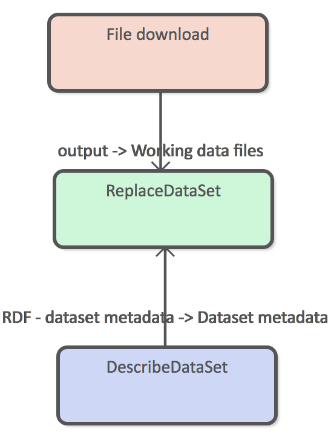
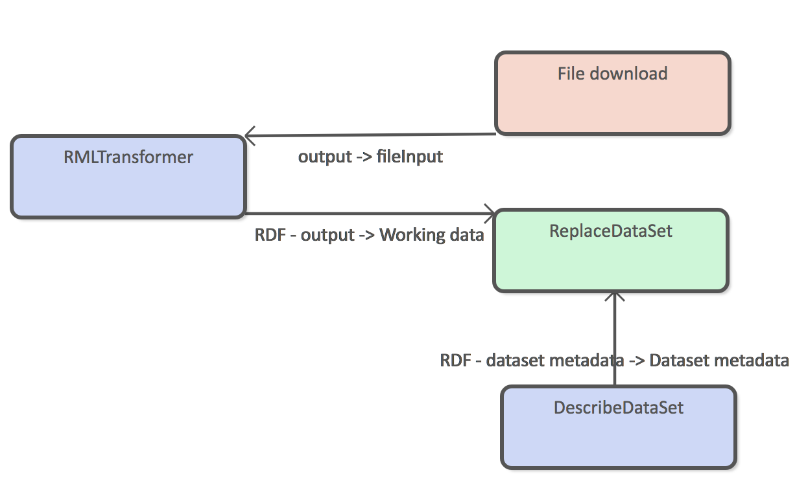
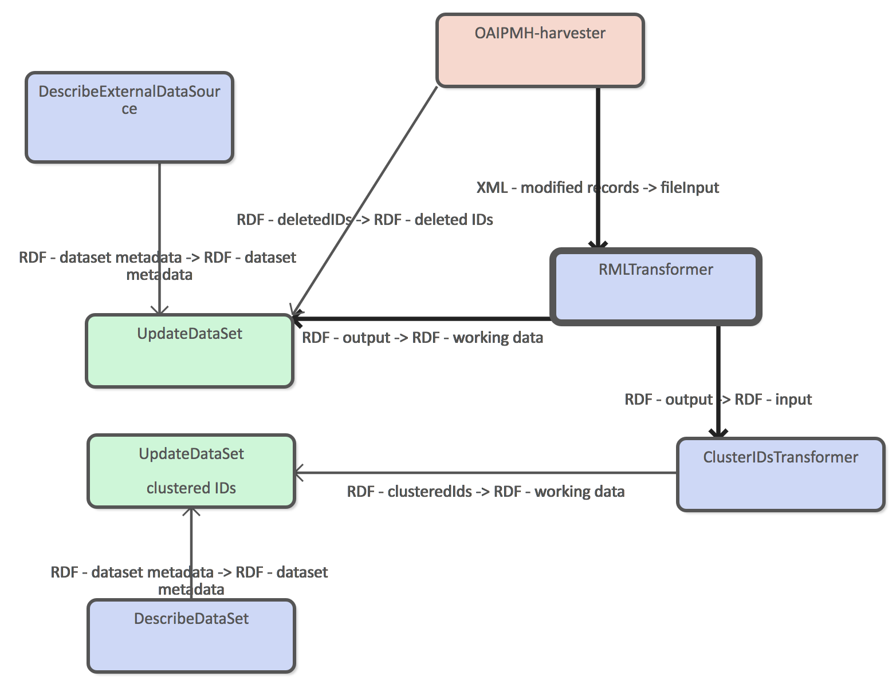
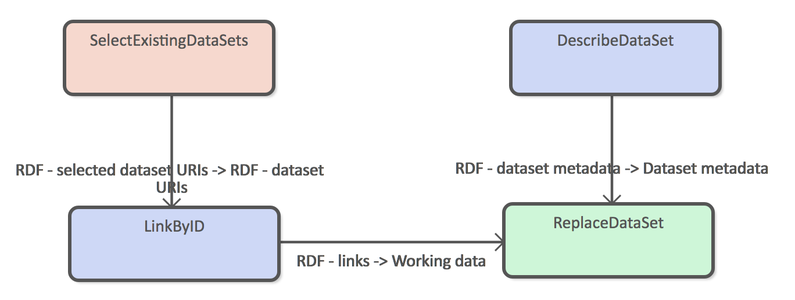
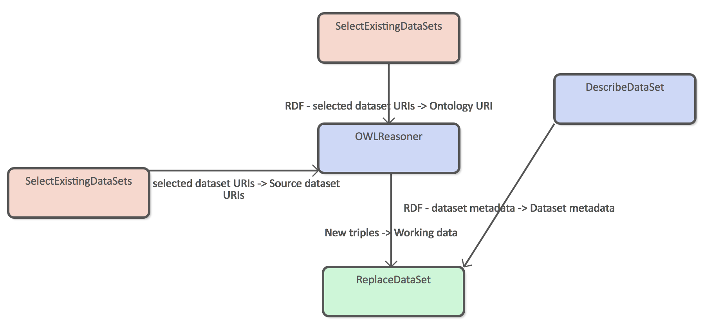
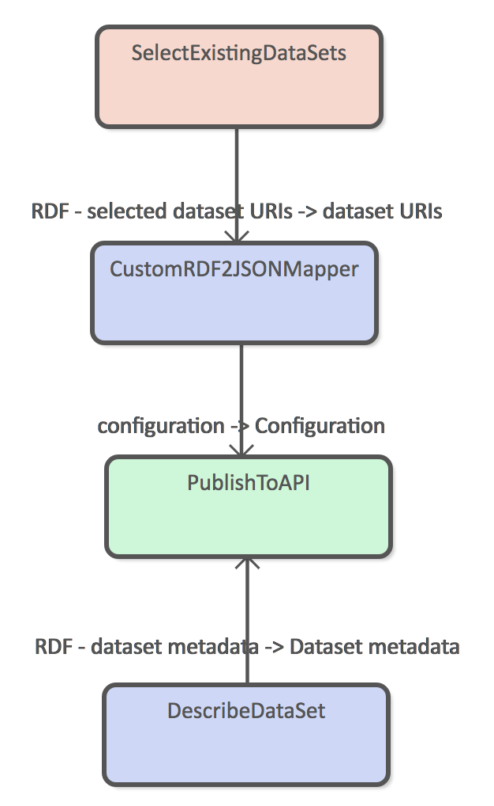

To Be Refactored for version 2
ATTX Semantic Broker - Data Administrator's User guide
Introduction
This user guide is for people who have an ATTX Semantic Broker platform instance up and running and want to start working with data. ATTX uses UnifiedViews ETL tool as the tool to define, execute, monitor, debug, schedule data related processes. In UnifiedViews these processes are defined as pipelines, which consists of steps that are implemented using DPUs (Data Processing Unit).
The traditional way of using ETL tools is to create potentially complex pipelines that Extract data from one or more data sources, run multiple Transformations and finally Load the data to another system. In these scenarios, ETL tool sits in the middle, handling data flows from A to B. In ATTX Semantic Broker, ETL is part of the system itself and the system can use itself as the data source. From the ETL point of view, it is a opinionated framework for building pipelines.
ATTX Semantic Broker has three types of pipelines: Ingestion, Processing and Distribution. Each type has its own characteristics, but the main ideas are as follows:
- Ingestion pipelines are the only ones that work with external data;
- Processing pipelines only work with internal data;
- Distribution pipelines are the only ones that are used to expose/distribute/publish data to the public.
Table of Contents
Pipeline Types
Every pipeline essentially represents one or more datasets.
Ingestion Pipelines
Simple download and replace
The simplest ingestion pipeline consists of three DPUs as depicted in figure X. In this example the downloaded data is already in RDF format and requires no transformations. Replace dataset loader means that old version of the data are always completely replaces with the new version.

This kind of pipelines can be used to download ontologies or vocabularies to the Semantic Broker.
Download and transform
It more common that the source data is not in RDF format or that the structure of the data is not exactly what you want store internally. Figure X shows an example where RMLTransformer is used to transform from example CSV file into RDF before adding in to the Semantic Broker's data storage.

Both replace and update data set DPUs require RDF input, so transformation step is required for all input data that is not available in RDF format.
Incremental harvesting
OAI-PMH harvesting interface allows one to harvest new records incrementally based on the timestamp they were last modified. Incremental harvesting requires UpdateDataSet DPU to be used, or otherwise the target dataset will only contain the latest changes.

Example workflow has two Loader DPUs, because we want to store clustered ids in to a separate dataset so that we can update the clustering configuration more easily.
Processing Pipelines
Link by ID
This example uses clustered ids and harvested datasets as the source data and generated new explicit links between resource. For example:
Clustered ids:
:pub1
attx:id "urn:1"
:org1
attx:id "orgID1"
working data 1
:pub1
a Publication
urn "urn:1"
org "orgID1"
linkByID data set
:pub1
orgLink :org1

Simple reasoning
OWNReasoner can be configured to use either pipeline specific ontology or ontology data set as it's configuration. This example shows an example of the latter case. SelectExistingDataSets DPU connected to the Ontology URI port is the data set that contains ontology triples where as the other SelectExistingDataSets DPU refers to the data set that contain triples that will the target of the reasoning process.

Distribution Pipelines
Basic distribution pipeline example that select all the required source data and uses the custom RDF to JSON mapper to transform graph into documents. Resulting documents are added to the REST API using PublishToAPI DPU.

ATTX DPUs
ATTX Semantic Broker ships with custom UnifiedViews DPUs that must be used when designing pipelines. DPUs have been categorized into extract, transform/generate and load classes and in most cases every pipeline contains at least one DPU from each category.
Extractors
ATTX extractor DPU are used to configure ingestion of external data source to the Semantic Broker or selection of existing data source(s) for processing or dissemination.
File Download
This DPU simply downloads and stores file from the given URL and passes it on to further processing. It can be used update dataset that are based on for example CSV exports.
Configuration:
- URL *
- username
- password
- method
- payload
- ignore SSL errors
- timeout
Output:
- files
OAI-PMH Harvester
This is a more complicated downloader that works with data sources that comply with OAI-PMH 2.0 metadata harvesting protocol. This harvester can be used for selective and incremental harvesting via set and from and until parameters. Set defines a named set of records i.e. "Openly_available_theses" for harvesting. From and until are YYYY-MM-DD (date) formatted string that can be used to filter harvested records based on their timestamps. Another way to filter records by times-tamp is to harvest only records that were added/modified/deleted since the previous successful execution of the pipeline.
If the data source supports tracking of deleted records, those are outputted as a separate set of OAI-PMH identifiers.
Configuration:
- base URL *
- metadata format *
- set
- Filter by date (bool)
- from date
- until date
- since previous successful harvesting
Output:
- deleted ids
- OAI-PMH identifiers of deleted records.
- modified records
Select Existing Datasets
This DPU provides search interface to the existing dataset metadata and allows users to reuse their content as the data source for pipelines. This DPU must be used as a loader for both processing and distribution pipelines.
Configuration/Output:
- Selected dataset URIs
Transformers
ATTX transformers create new data. New data can be metadata about the datasets or data that is generated through some type of processing, such as linking, reasoning or any kind of transformation.
Describe External Data Source
This DPU is used to input simple metadata about the data source that is being used as the basis of internal data set. The main difference between internal data set and external data source, is that latter must contain some type of indication of license. Same licensing information is then attached to any derived dataset from this data source. In the case two external datasets are used in the Processing pipeline with distinct licenses, the license associated with the derived dataset will be the most restrictive.
Configuration:
- Name *
- Description
- License *
Output:
- Data source metadata
Describe Data Set
Provides simple metadata for the internal dataset, which is used for example by the "Selected existing datasets" DPU.
Configuration:
- Name *
- Description
Output:
- Data set metadata
Cluster IDs
This DPU generates triples that cluster all the different resource identifier under one common property.
When used as part of a ingest pipeline, one must use the RDF input connector. This provides the currently ingested RDF as the source for clustering.
This DPU can also be used as part of a processing pipeline when paired with "Select existing data sets" DPU. This way the source data is the full content of one or more working graphs.
How about a case where data about the same Thing is coming in from two different sources?
Configuration:
- list of properties to use for clustering as URIs
Output:
- Clustered IDs RDF
Example:
Configuration:
- dc:identifier, custom:urn
Input
<attx:ds/1/work/infra/1>
<dc:identifier> "infra/1" ;
<custom:urn> <urn:2> .
Output:
<attx:ds/1/work/infra/1>
<attx:id> "infra/1" ;
<attx:id> <urn:2> .
RML Transformer
Uses RML processor to transform CSV, XML and JSON files to RDF.
Configuration:
- RML configuration
Output:
- RDF
Link by ID
Creates new explicit links from identifiers using the clustered IDs information.
Configuration:
- Source type
- Source property
- Target property
Output:
- RDF
Example:
working data 1
:pub1
a Publication
urn "urn:1"
org "orgID1"
:org1
extID "orgID1"
ids graph
:pub1
attx:id "urn:1"
:org1
attx:id "orgID1"
Configuration
- source type: Publication
- source property: org
- target property: orgLink
New data
:pub1
orgLink :org1
Custom RDF to JSON Mapper
Uses custom configuration file to traverse and transform RDF to nested JSON documents.
TODO: Add more detailed description of mapping file.
RDF to JSON mapper can only work on existing data sets and cannot therefore be part of a ingestion pipeline.
Input:
- dataset URIs
Output:
- Custom mapping configuration
JSON-LD Framing Based RDF to JSON Mapper
Uses JSON-LD framing to create deterministic serialization of a graph to JSON document.
RDF to JSON mapper can only work on existing data sets and cannot therefore be part of a ingestion pipeline.
Input:
- dataset URIs
Output:
- Framing configuration
Loaders
ATTX Loaders are components handle generated data by either storing it internally or handing it over to a distribution component for public consumption. Loader DPUs only have inputs.
Replace Data Set
DPU that replaces all the old content with new data. This DPU should be used, when the source data is from a data dump.
Input data can be configured to be RDF passed down from previous DPUs or file generated by some other DPU.
Inputs:
- Data set metadata
- New data
- New data files
Update Data Set
Update DPU uses input data to create a SPARQL update request, which will preserve any existing data that is not part of the update. It also handles situations where value of a certain property has changed without creating duplicate property values. For example:
Old data:
<subject> <dct:title> "Test"
SPARQL update:
DELETE { <subject> <dct:title> "Test" }
INSERT { <subject> <dct:title> "Testing" }
New data:
<subject> <dct:title> "Testing"
Inputs
- Data set metadata
- Deleted IDs
- Updated data
Target graph is generated based on the contextual information.
Publish to API
This DPU can be used to distributed generated JSON documents through a REST API.
Input:
- dataset metadata
- configuration
Publish to File
This DPU copies file to a web server with given path and file name.
Configuration:
- path
- File name
Semantic Broker End to End Usage Scenario
This section provides a end to end example that uses ATTX Semantic Broker platform from harvest, to linking and distributing the data maintained by three different sources.
Data sources are:
- Helda publication data
- Finto vocabularies
- HY organization registry
A first step consists of linking publication metadata with Finto vocabularies and organizational units using subject and contributor field respectively. In the following step it will use simple OWL reasoning on SKOS vocabulary to add links from linked subject's parent concepts to the publication. This allows users for example to search for "Beverage" and find things described as "Tea". Finally, the distribution pipeline will add multilingual labels for the linked subjects.
Example of result document:
{
"title": "Testing",
"org": {
"name": "Helsinki University Library",
"orgUnitCode": "Test"
},
"subjects": [
{
"id": "http://www.yso.fi/onto/yso/p5127",
"label": {
"fi": "juomat",
"en": "beverages",
"sv": "drycker"
}
}
]
}
To be continued...